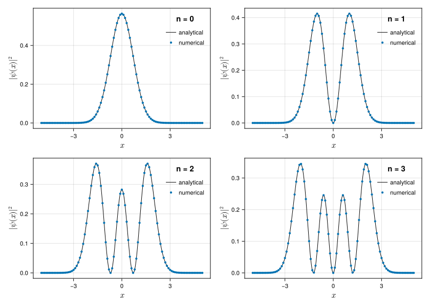

Examples
Here are some practical examples. Please refer to the API reference for how to use each function.
Order of Accuracy
Here is an example of $\sin'(0)=\cos(0)=1$. The value asymptotically approaches the exact value as the order of the accuracy $m$ increases.
using FiniteDifferenceMatrices
using Printf
for m in 2:2:12
@printf("m = %2d %.18f\n", m, fdvalue(sin, 0.0, n=1, m=m, d=:c, h=big"0.05"))
endm = 2 0.999583385413566576
m = 4 0.999999791728661594
m = 6 0.999999999888447098
m = 8 0.999999999999938038
m = 10 0.999999999999999965
m = 12 1.000000000000000000Here is a comparison of exp(0.0) and fdvalue(exp, 0.0, n=n, m=m, d=:f). The error is proportional to $h^m$ (the solid line). But Float64 values do not follow the scaling law due to the rounding errors in small $h$. This problem is avoided by using BigFloat.
using FiniteDifferenceMatrices
using CairoMakie
CairoMakie.activate!(type = "svg")
for t in [Float64, BigFloat]
f = Figure(size=(420*2,420), fontsize=11.5)
for n in 1:2
ax = Axis(
f[1,n],
title = "$t, n=$n",
xlabel = L"h",
ylabel = L"|f^{(n)} - \mathrm{fdvalue}|",
titlesize = 16.5,
ylabelsize = 16.5,
xlabelsize = 16.5,
xscale = log10,
yscale = log10,
limits = (8e-4,1.2e-1,1e-30,1)
)
for m in 1:9
X = [0.1, 0.05, 0.02, 0.01, 0.005, 0.002, 0.001]
Y = [abs(exp(0.0) - fdvalue(exp, 0.0, n=n, m=m, d=:f, h=convert(t,h))) for h in X]
a = Y[1] / X[1]^m
lines!(ax, [1e-4,1e0], x->a*x^m, color=m, colorrange=(1,9), colormap=:tab10, linestyle=:solid, linewidth=1)
scatter!(ax, X, Y, label="m = $m", color=m, colorrange=(1,9), colormap=:tab10)
end
axislegend(ax, position=:rb, nbanks=3, colgap=10, rowgap=0, padding=(0,0,0,0), framevisible=false)
end
display(f)
end
Derivative
We approximate a function f to a vector [f(0.0), f(0.1), f(0.2), ...]. Its derivative is calculated as the product of a finite difference matrix and the vector. The values at the ends of the domain have large errors.
using FiniteDifferenceMatrices
using CairoMakie
CairoMakie.activate!(type = "svg")
# domain X, function Y, differential operator D
Δx = 0.2
X = -3.7:Δx:3.7
Y = sin.(X)
D = fdmatrix(length(X), n=1, m=2, d=:c, h=Δx)
# derivative
Z1 = cos.(X) # analytical derivative
Z2 = D*Y # numerical derivative
# plot
f = Figure(size=(420,300), fontsize=11.5)
ax = Axis(f[1,1], xlabel=L"x", ylabel=L"\sin'(x)", ylabelsize=16.5, xlabelsize=16.5)
lines!(ax, X, Z1, label="analytical")
scatter!(ax, X, Z2, label="numerical")
axislegend(ax, position=:cb, rowgap=0, padding=(5,5,2,2), framevisible=false)
fDiscrete Approximation of Hamiltonian
Discrete approximations (the central finite difference of the second-order accuracy) of the Hamiltonian $\hat{H} = - \frac{\hbar^2}{2m} \frac{\mathrm{d}^2}{\mathrm{d}x^2} + V(x)$ , the wave function $\psi(x)$ and the energy $E$ are written as
\[\pmb{H} = - \frac{\hbar^2}{2m} \cdot \frac{1}{h^2} \left(\begin{array}{ccccccc} -2 & 1 & 0 & \ldots \\ 1 & -2 & 1 & \ldots \\ 0 & 1 & -2 & \ldots \\ \vdots & \vdots & \vdots & \ddots \\ \end{array}\right) + \left(\begin{array}{ccccccc} V(x_1) & 0 & 0 & \ldots \\ 0 & V(x_2) & 0 & \ldots \\ 0 & 0 & V(x_3) & \ldots \\ \vdots & \vdots & \vdots & \ddots \\ \end{array}\right), \\ \pmb{\psi} = \left(\begin{array}{c} \psi(x_1) \\ \psi(x_2) \\ \psi(x_3) \\ \vdots \\ \end{array}\right), \\ E = \frac{\langle\psi|\hat{H}|\psi\rangle}{\langle\psi|\psi\rangle} \simeq \frac{\pmb{\psi}^\ast \pmb{H} \pmb{\psi}}{\pmb{\psi}^\ast \pmb{\psi}}.\]
Here, we show the non-dimensionalized Hamiltonian of the harmonic oscillator, its ground state wave function and the energy:
\[\hat{H} = - \frac{1}{2} \frac{\mathrm{d}^2}{\mathrm{d}x^2} + \frac{1}{2}x^2, \\ \psi_0(x) = \pi^{-1/4} \exp \left( -\frac{1}{2}x^2 \right), \\ E_0 = \frac{\langle \psi_0 | \hat{H} | \psi_0 \rangle}{\langle \psi_0 | \psi_0 \rangle} = \frac{1}{2}.\]
using FiniteDifferenceMatrices
using SparseArrays
Δx = 0.1
X = -10:Δx:10
H = -1/2 * fdmatrix(length(X), n=2, m=2, d=:c, h=Δx) + spdiagm([1/2*x^2 for x in X])
ψ = [π^(-1//4)*exp(-1/2*x^2) for x in X]
# S = sqrt(Δx * ψ' * ψ) # norm
E = (ψ' * H * ψ) / (ψ' * ψ) # energy
@show E0.49968776025398826Variational Method
This is an example of a variational calculation for the harmonic oscillator. We optimize the parameter $\alpha$ to minimize the energy $E$:
\[\frac{\partial E}{\partial \alpha} = 0.\]
The energy $E$ depends on the parameter $\alpha$ because the trial wave function $\psi_\mathrm{trial}$ depends on the parameter $\alpha$:
\[\psi_\mathrm{trial}(x) = \left( \frac{2\alpha}{\pi} \right)^{\frac{1}{4}} \exp \left( - \alpha x^2 \right).\]
using FiniteDifferenceMatrices
using SparseArrays
using Printf
Δx = 0.1
X = -10:Δx:10
H = -1/2 * fdmatrix(length(X), n=2, m=8, d=:c, h=Δx) + spdiagm([1/2*x^2 for x in X])
println(" α E")
println("------------------")
for α in 0.1:0.1:1.0
ψ = [((2*α)/π)^(1//4)*exp(-α*x^2) for x in X]
E = (ψ' * H * ψ) / (ψ' * ψ)
@printf("%.1f %.9f\n", α, E)
end
println("------------------")
println("minimum:")
println(" α = 0.5")
println(" E = 0.5") α E
------------------
0.1 1.299999995
0.2 0.725000000
0.3 0.566666667
0.4 0.512500000
0.5 0.500000000
0.6 0.508333333
0.7 0.528571428
0.8 0.556250000
0.9 0.588888888
1.0 0.624999999
------------------
minimum:
α = 0.5
E = 0.5In this case, the trial wave function of $\alpha=1/2$ is equal to the exact solution. Note that the "best" trial wave function (that gives the lowest energy, according to the variational principle) may not yield a better value for other properties (such as the norm or expected values). Please see J. F. Pérez-Torres, J. Chem. Educ. 2019, 96, 4, 704–707 (2019).
using CairoMakie
CairoMakie.activate!(type = "svg")
f = Figure(size=(420,300), fontsize=11.5)
ax = Axis(f[1,1], xlabel=L"x", ylabel=L"\psi(x)", limits=(-5,5,0.0,0.8), titlesize=16.5, ylabelsize=16.5, xlabelsize=16.5)
for α in 0.3:0.1:0.6
ψ = [((2*α)/π)^(1//4)*exp(-α*x^2) for x in X]
lines!(ax, X, ψ, label="α = $α")
end
lines!(ax, X, x -> π^(-1//4)*exp(-1/2*x^2), label="exact", color=:black, linestyle=:dash, linewidth=2)
axislegend(ax, position=:rt, rowgap=0, padding=(0,0,0,0), framevisible=false)
fEigenvalue Problem
The eigenvalue problem of the Hamiltonian matrix $\pmb{H}$ gives approximate energies and approximate wave functions. Please refer to the Antique.jl for the closed forms of the analytical solutions.
using FiniteDifferenceMatrices
using SparseArrays
using LinearAlgebra
# using ArnoldiMethod
using Printf
import Antique
HO = Antique.HarmonicOscillator(k=1.0, m=1.0, ℏ=1.0)
Δx = 0.1
X = -5:Δx:5
I = keys(X)
T = -HO.ℏ^2/2/HO.m * fdmatrix(length(X), n=2, m=8, d=:c, h=Δx)
V = Diagonal([Antique.V(HO,x) for x in X])
H = T + V
# decomp, history = partialschur(H, nev=10, tol=1e-9, which=SR())
# E = real.(decomp.eigenvalues)
E, ψ = eigen(Matrix{Float64}(H))
println(" n numerical analytical")
println("-- -------------- --------------")
for n in 0:9
@printf("%2d %.12f %.12f\n", n, E[n+1], Antique.E(HO, n=n))
end n numerical analytical
-- -------------- --------------
0 0.499999999985 0.500000000000
1 1.500000001062 1.500000000000
2 2.500000034551 2.500000000000
3 3.500000555298 3.500000000000
4 4.500006084209 4.500000000000
5 5.500049973732 5.500000000000
6 6.500321040771 6.500000000000
7 7.501649561884 7.500000000000
8 8.506863078481 8.500000000000
9 9.523313467073 9.500000000000The vector ψ[:,1] corresponds to the eigenfunction for the ground state ($n=0$) and the vector ψ[:,n+1] corresponds to the eigenfunctions of the $n$-th excited state.
using CairoMakie
CairoMakie.activate!(type = "svg")
f = Figure(size=(840,600), fontsize=11.5)
for i in 1:4
n = i - 1
ax = Axis(
f[Int(ceil(i/2)),rem(i-1,2)+1],
xlabel = L"x",
ylabel = L"|\psi(x)|^2",
titlesize = 16.5,
ylabelsize = 16.5,
xlabelsize = 16.5,
)
lines!(ax, -5..5, x -> Antique.ψ(HO,x,n=n)^2, label="analytical", color=:black, linestyle=:solid, linewidth=1)
scatter!(ax, X, (ψ[:,i] / sqrt(Δx)) .^ 2, label="numerical", markersize=6)
axislegend(ax, "n = $n", position=:rt, rowgap=0, framevisible=false, titlesize=15.0)
end
f
Imaginary Time Evolution
The imaginary time Schrödinger equation and its formal solution are written as
\[-\frac{\partial \varPsi(x,\tau)}{\partial \tau} = \hat{H} \varPsi(x,\tau), \\ \varPsi(x,\tau) = \exp \left[- \hat{H} \tau \right] \varPsi(x,0).\]
It is projected to the ground state (g.s.) in the long imaginary-time limit $\tau\rightarrow\infty$. It is able to calculate the imaginary time evolution by a direct treatment because Julia has built-in matrix exponentials. The efficient matrix exponentials for sparse matrices are supported in FastExpm.jl.
using FiniteDifferenceMatrices
using SparseArrays
using CairoMakie
CairoMakie.activate!(type = "svg")
# domain X, Hamiltonian H, initial state ψ₀
Δx = 0.1
X = -10:Δx:10
H = -1/2 * fdmatrix(length(X), n=2, m=4, d=:c, h=Δx) + spdiagm([1/2*x^2 for x in X])
Ψ₀ = [-2.5 ≤ x ≤ 2.5 ? 0.2 : 0.0 for x in X]
# plot
f = Figure(size=(420,300), fontsize=11.5)
ax = Axis(f[1,1], xlabel="x", ylabel="Ψ(x,τ)", limits=(-5,5,0.0,0.8), titlesize=16.5, ylabelsize=16.5, xlabelsize=16.5)
for τ in [0.0, 0.1, 1.0, 10.0]
Ψ = exp(-Matrix{Float64}(H)*τ) * Ψ₀
lines!(ax, X, Vector{Float64}(real(Ψ / sqrt(Δx * Ψ' * Ψ))), label="τ = $τ")
end
lines!(ax, X, x -> π^(-1//4)*exp(-1/2*x^2), label="g.s.", color=:black, linestyle=:dash, linewidth=2)
axislegend(ax, position=:rt, rowgap=0, padding=(0,0,0,0), framevisible=false)
f